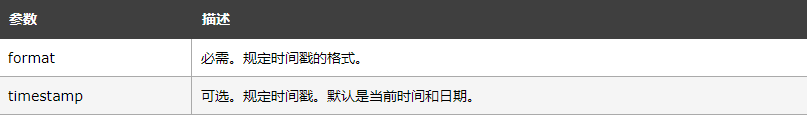
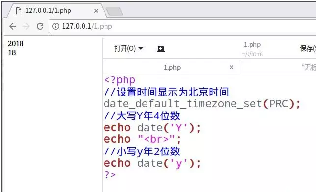
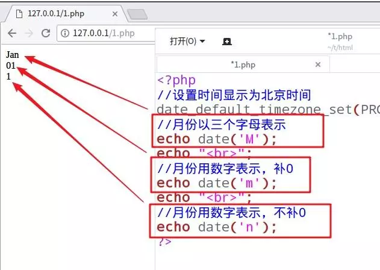
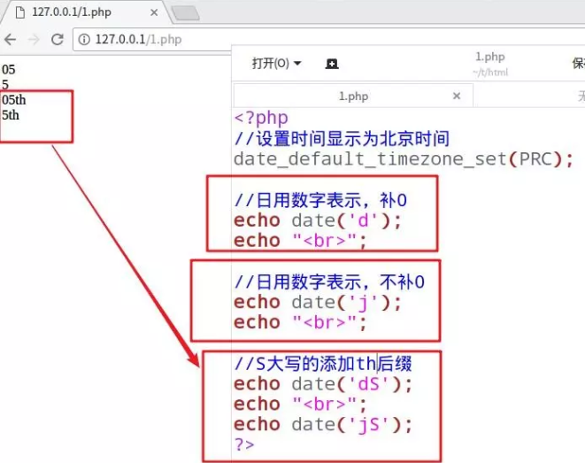
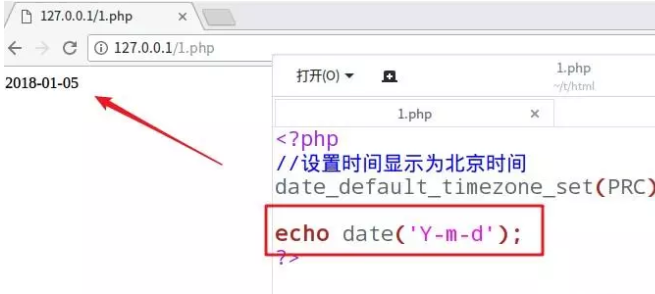
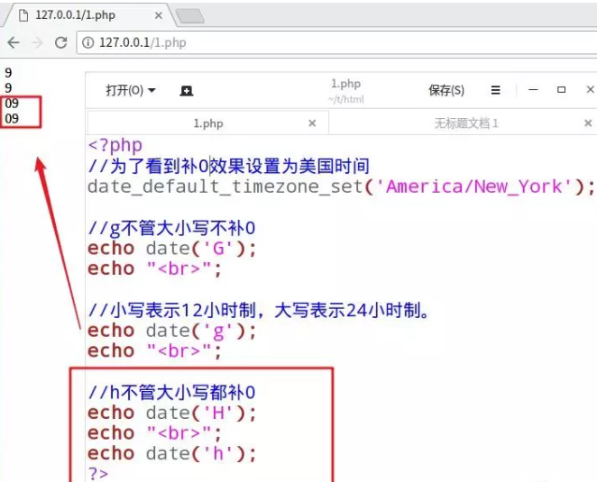
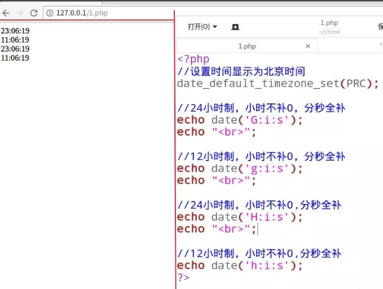
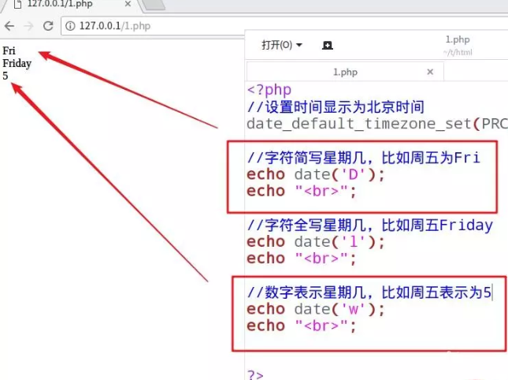

php日期格式化一般使用date()来完成，此函数的声明及定义如下图所示，其参数有很多，这里按常用的年、月、日、时、分、秒、星期来简单介绍。
date(format,timestamp)
一、年、月、日格式化
年的格式方法：y：小写的y只显示2位数字，Y：大写的y显示4位数字
小技巧：y是year的首字母，大的就多，意思是大写的表示用的数字多（4），小写的2位。示例如下。

二、月的格式化方法
m:月份用两位数字表示，补0,从"01"至"12"
n:月份用两位数字表示，不补0，从"1"至"12"
M:月份用3个英文字母表示，就是英文月份的简写，如1月月表示为Jan。
小技巧:一般使用m来表示，英文month，而且方便用小写。示例如下。

三、日的格式化方法
d:日用两位数表示，补0
j:日用两位数表示，不补0
S:大写的s加th后缀，比如10th
小技巧：d是day的第一个字母，因此一般用d表示日，特殊情况下使用j和大写的S。示例如下。

实例显示今天的年、月、日，以年-月-日的格式显示，也可以根据自己的需要设置格式，年、月、日表示方法是一样的。示例如下。

四、时分秒的格式化
小时的格式化:
G：24小时制，不补0,比如1点表示为
g: 12小时制，不补0,比如1点表示为
H: 24小时制，补0,比如1点表示为0
h: 12小时制，补0，比如1点表示为0
小技巧：大写的表示24小时制，小写的表示12小时制，字母G不管大小写都补0,字母H不管大小写都不补0.示例如下。

分和秒的格式化分别用i和s参数。
i:表示分钟数，补0,从00～59
s:表示秒数，补0，从00～59
示例如下。

五、星期格式化
D:字母表示星期几，表示为星期几的缩写。
l:字母表示星期几，表示为星期几的全称
w:数字表示星期几。
示例如下。
